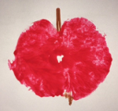

Am 22.10.2016 möchte die Kita mit uns und euch ein
Apfelfest feiern. Wir treffen uns um 10:00 vor der Kita
und werden dann alle gemeinsam zur Wiese hinter dem Karlsgarten gehen. Dort werden wir spielen, essen
& trinken und es uns gut gehen lassen.

Wir brauchen dazu eure Unterstützung in Form einer Kuchen, Muffin oder Gebäckspende. Bitte tragt euch in die
ausgehängten Listen vor den Gruppen ein. Die Kuchen können an dem Tag selbst in den Kindergarten gebraucht
werden. Von dort wird ein Auto sie zur Wiese hinter den Karlgarten bringen.
Vielen Dank für eure Unterstützung!